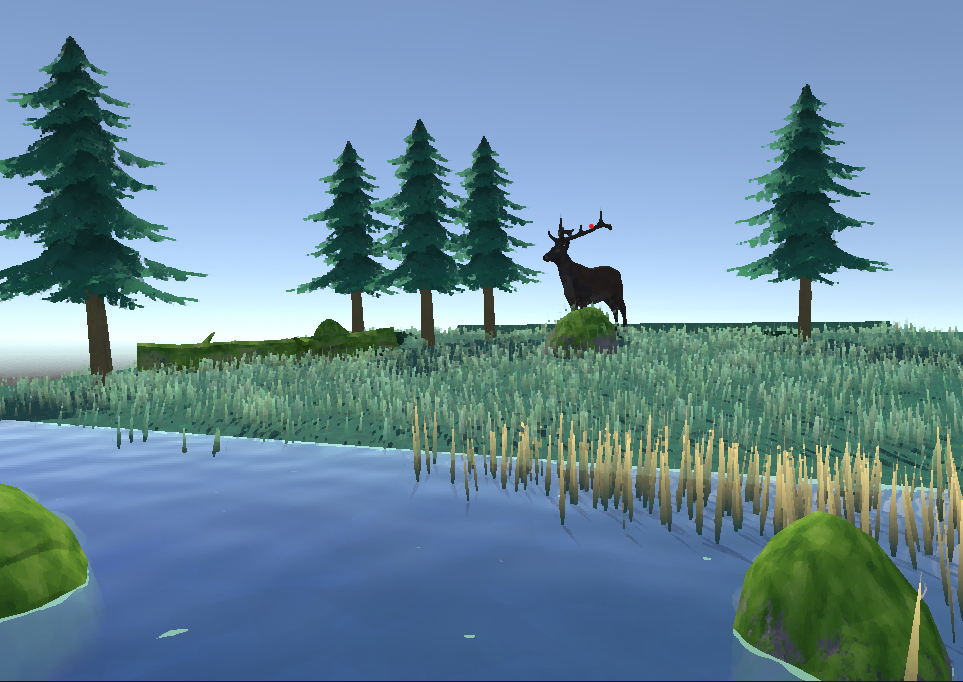
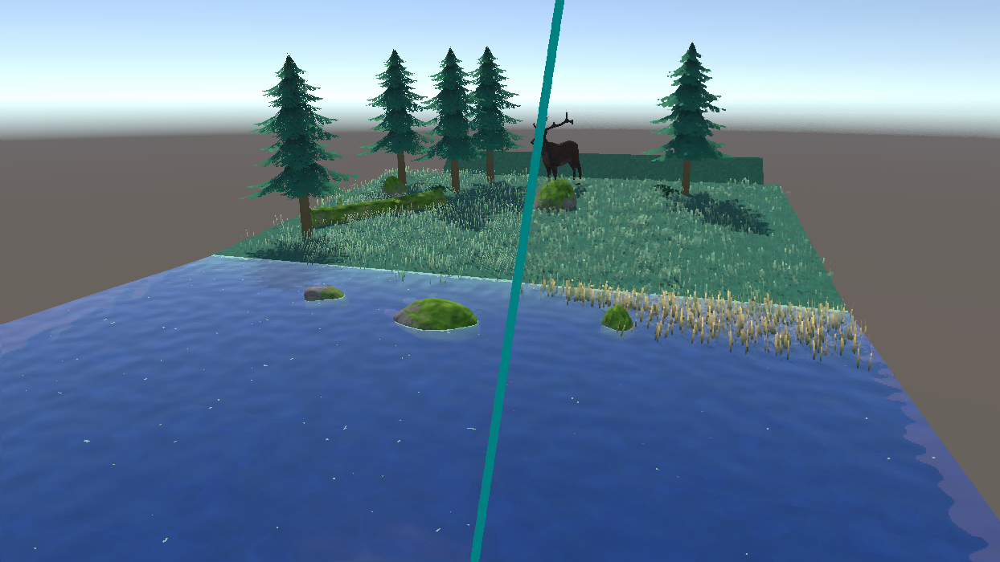

Project Highlands Prototype
Since we are a small team at konglomerate usually we have to do a bit of everything however, for Project highlands we were allowed to specialise into more specific fields within the programming team. Since I hadn't got much of a chance to do much graphical programming I volunteered to create any relevant shaders and related tools. This had me working with the art department to develop the visual effects they wanted. Along with this I got to experiment with my own ideas and effects while sticking to the style guide created by the artists.
So far I've created / prototyped the following: Painted post processing effect (kuwahara filter), Water shader, Grass painter tool which then generates grass with a compute shader, leaf particles, foilage wind movement, and a river creation tool.
